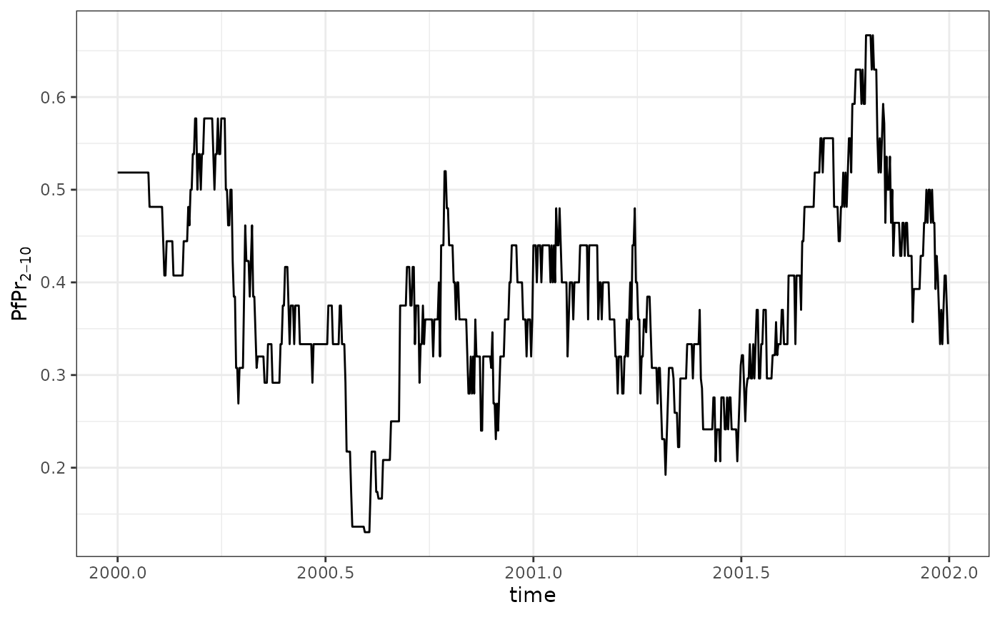
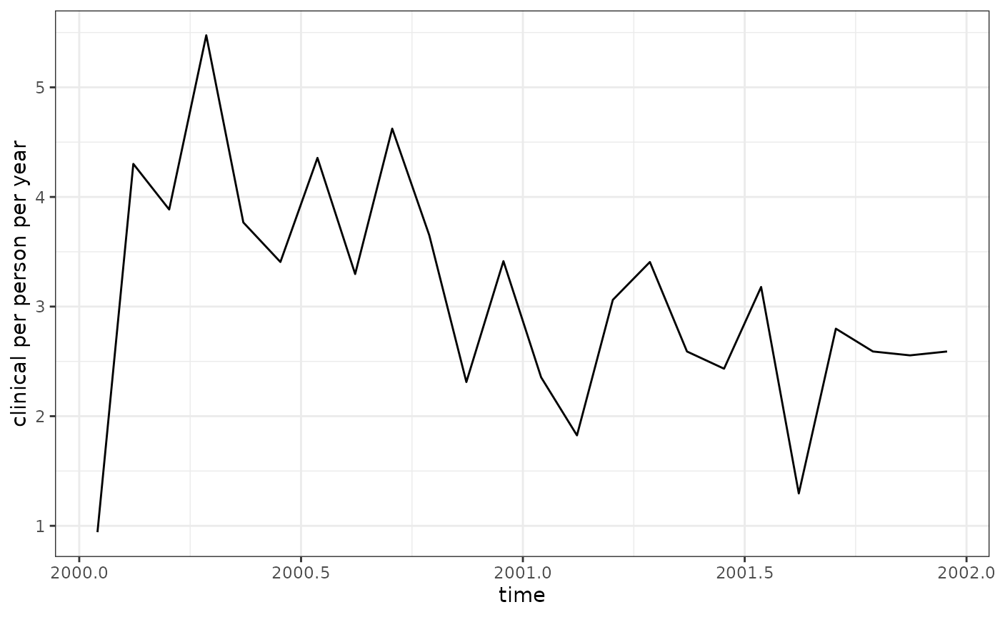

Analysing malariasimulation output with postie
analysing_malaria_output.RmdPostie provides tools to post-process output from malariasimulation. This vignette runs a short example simulation and explores how to summarise the resulting prevalence and incidence estimates.
Running a basic simulation
# install.packages("malariasimulation")
library(malariasimulation)
library(postie)
library(dplyr)
#>
#> Attaching package: 'dplyr'
#> The following objects are masked from 'package:stats':
#>
#> filter, lag
#> The following objects are masked from 'package:base':
#>
#> intersect, setdiff, setequal, union
library(ggplot2)
# set up parameters
year <- 365
p <- get_parameters() |>
set_drugs(list(AL_params)) |>
set_clinical_treatment(1, 0.5, 0.5) |>
set_epi_outputs(
age_group = c(0, 5, 15, 200) * year,
prevalence = c(2, 10) * year,
clinical_incidence = c(0, 5, 15, 200) * year,
severe_incidence = c(0, 5, 15, 200) * year
)
# run for two years
sim <- run_simulation(2 * year, p)The object sim is a data frame containing the time
series of all requested outputs. Postie converts these counts into rates
that are easier to interpret.
Rates and prevalence
rates <- get_rates(sim)
#> Warning in get_rates(sim): required column `ft_sev` (probability
#> hospitalisation | severe case) not found, assuming ft_sev = 0.8
#> Warning: required column `ft_sev` (probability hospitalisation | severe case) not found, assuming ft_sev = 0.8
head(rates)
#> # A tibble: 6 × 18
#> year month week day time age_lower age_upper clinical severe_hospital
#> <dbl> <int> <dbl> <dbl> <dbl> <dbl> <dbl> <dbl> <dbl>
#> 1 2000 1 1 1 2000 0 5.00 0 0
#> 2 2000 1 1 1 2000 5 15.0 0 0
#> 3 2000 1 1 1 2000 15 200. 0 0
#> 4 2000 1 1 2 2000. 0 5.00 0 0
#> 5 2000 1 1 2 2000. 5 15.0 0 0
#> 6 2000 1 1 2 2000. 15 200. 0 0
#> # ℹ 9 more variables: severe_community <dbl>, severe <dbl>,
#> # mortality_hospital <dbl>, mortality_community <dbl>, mortality <dbl>,
#> # yld <dbl>, yll <dbl>, dalys <dbl>, person_days <dbl>
sim <- dplyr::mutate(sim, ft_sev = 0.5)
rates <- get_rates(sim)
prev <- get_prevalence(sim)
head(prev)
#> year month week day time lm_prevalence_2_10
#> 1 2000 1 1 1 2000.000 0.5185185
#> 2 2000 1 1 2 2000.003 0.5185185
#> 3 2000 1 1 3 2000.005 0.5185185
#> 4 2000 1 1 4 2000.008 0.5185185
#> 5 2000 1 1 5 2000.011 0.5185185
#> 6 2000 1 1 6 2000.014 0.5185185Handling ft_sev
The column ft_sev contains the probability that a severe
case leads to hospital admission. When it is missing
get_rates() assumes a value of 0.8 and prints a warning. By
supplying your own column before calling the function you can control
this assumption and remove the warning.
For the full methodology behind how postie adjusts severe incidence
and derives mortality from ft_sev (and the related
treatment_scaler, hosp_sev_cfr and
community_sev_cfr arguments), see the
vignette("severe-mortality").
The rates are per person per day. Multiplying by 365
converts them to the more familiar per person per year units.
prev |>
ggplot(aes(time, lm_prevalence_2_10)) +
theme_bw() +
geom_line() +
labs(y = expression(PfPr[2-10]))
Units and time aggregation
Rates returned by get_rates() are expressed per person
per day. The unit is separate from the time interval over which values
are aggregated. You can therefore average rates by month or year while
still reporting them as cases per person per year by multiplying by
365.
Aggregating over time and age
The flexibility of postie means you can aggregate outputs in many ways. For example, to obtain annual clinical incidence and mortality by the three age groups:
summary <- rates |>
mutate(
age_group = case_when(
age_upper <= 5 ~ "U5",
age_upper <= 15 ~ "5-15",
TRUE ~ "15+"
)
) |>
summarise(
clinical = weighted.mean(clinical, person_days) * 365,
mortality = weighted.mean(mortality, person_days) * 365,
person_days = sum(person_days),
time = mean(time),
.by = c(year, age_group)
)
summary
#> # A tibble: 6 × 6
#> year age_group clinical mortality person_days time
#> <dbl> <chr> <dbl> <dbl> <dbl> <dbl>
#> 1 2000 U5 1.32 0.0311 8047 2000.
#> 2 2000 5-15 5.19 0.0293 12809 2000.
#> 3 2000 15+ 3.50 0.0320 15644 2000.
#> 4 2001 U5 1.30 0.0159 7884 2001.
#> 5 2001 5-15 3.02 0.0197 12674 2001.
#> 6 2001 15+ 2.82 0.00785 15942 2001.Aggregating by both year and month can reveal seasonal patterns. The following code collapses the daily values to monthly rates and plots the clinical incidence over time.
monthly <- rates |>
summarise(
clinical = weighted.mean(clinical, person_days) * 365,
time = mean(time),
.by = c(year, month)
)
monthly |>
ggplot(aes(time, clinical)) +
theme_bw() +
geom_line() +
labs(y = "clinical per person per year")
Postie therefore provides a straightforward pipeline from raw model output to tidy, aggregated indicators ready for further analysis or visualisation.